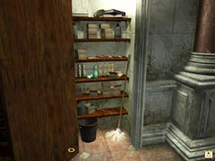
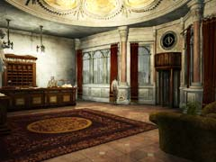
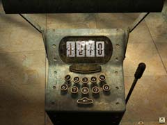
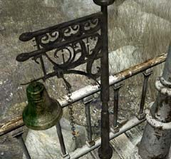
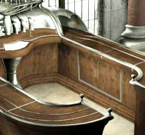
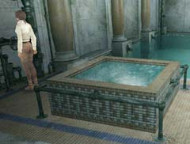

| 概要 | 地図 | |
| 淡いヒント集 | ヒント集 | 的確なヒント集 |
| 攻略最短ルート | Syberia 攻略へ |
| 場所選択に戻る |
注:完全なネタバレです
|
ホテル侵入のイベント ホテル内部に入り、受付に話しかける。 「ミッション」を選び、会話。 奥へ進み、扉の横にあるロッカーを調べる。 ロッカーに置いてある洗剤を入手。  受付付近の壁にあるレバーを引き、カーテンを開ける。  ホテルを出て、噴水に対して洗剤を使う。 受付に戻り、ベルを押す。 (受付が外に出ていく) カウンターの裏側に回り、パンフレットを入手。 カウンターの壁に付いている赤いボタンを押し、鍵を解除。 ホテルの内部へ。 |
|
ヘレナと会うイベント ホテルの大浴場入り口を左へ進み、バーラウンジへ。 バーラウンジ奥にある数字入力装置を調べる。  「1270」と入力し、左下へ進む。 バーラウンジから出たら、上側にある部屋に入る。 奥の机にあるワイングラスを入手。 部屋から出て、大浴場入り口の前を右へ進む。 扉が開いている部屋に入り、落ちているカードを入手。 数字入力装置へ戻り、「0968」と入力する。 (散歩道へ続く扉が開く) 扉の向こうへ進み、壁にかけてある酸素マスクを着用。 奥の扉へ進み、散歩道へ。 散歩道を進み、一段高くなった屋根のある場所(休憩所)へ行く。 ヘレナがベンチに座っているので話しかける。 |
|
ヘレナ救出(?)イベント ヘレナとの会話が終わったら、休憩所から離れる。 (階段を下りる) 左の電灯の下にあるベルを調べる。 ベルのレバーを引き、鳴らす。 ホテルへ戻る。 酸素マスクを外し、バーラウンジへ行く。 ジェイムスに話しかける。 再び酸素マスクを付けて、休憩所へ向かう。 電灯の下にあるベルを調べる。 ベルをクリックし、ベルを取り外す。 散歩道の出入り口に戻る。 画面中央の電灯の下にある物体を調べる。 ベルをかけるところがあるので、ベルをかける。  レバーを引き、ベルを鳴らす。 ホテルに戻り、ジェイムスに話しかける。 ジェイムスがヘレナを連れてくる。 |
|
カクテルのイベント ヘレナに話しかけ、「ミッション」、「ハンス」を選ぶ。 携帯電話で「46433643」に電話をする。 バーカウンターのヘレナの足下付近を調べる。  (この部分の壁だけ銀色の四角い枠がある) 中にハチミツ、レモンがあるので入手。 入り口側の大浴場入り口へ戻る。 大浴場入り口を右へ進む。 (風呂に入った男が2人チェスをしている) 男の手前に給湯器があるので近づく。 壁にハンドルがあるので回す。  (水槽に湯気が立つ) 水槽の中にハチミツを入れる。 バーラウンジのバーカウンターに戻る。 装置を調べ、適切な場所にウォッカ、ハチミツ、レモンを装着。 酒瓶が付けてある場所に楽譜があるので入手。  「I/O」ボタンを押す。 左から2番目の鍵盤を押す。 鍵盤横のスイッチを押す。 左から3番目の鍵盤を押す。 雪の結晶マークのボタンを押す。 ハチミツマーク(六角形)のボタンを押す。 レモンのマークのボタンを押す。 一番右のボタンを押す。 (人形がコップを持ってくる) ヘレナがカクテルを飲む。 |
|
ヘレナを連れていくイベント ヘレナはカクテルを飲んでも落ち込んでいる。 バーカウンターの隅にワイングラスを置く。 ヘレナに話しかける。 飛行船に戻る。 |
| 場所選択に戻る |
| 概要 | 地図 | |
| 淡いヒント集 | ヒント集 | 的確なヒント集 |
| 攻略最短ルート | Syberia 攻略へ |
Syberia
| 目次へ戻る | ページの上部へ |